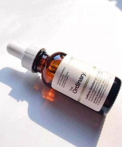

The Ordinary Caffein Solution 5% + EGCG

Công dụng của The Ordinary Caffein Solution 5% + EGCG
- Giảm quầng thâm mắt
- Giảm bọng mắt
- Ngăn ngừa xuất hiện nếp nhăn quanh vùng mắt
- Cấp nước cho vùng da mắt luôn ẩm mượt
- Làm sáng da, đều màu da mắt
- Nâng cao chất lượng của các sợi Elastin và Collagen
Hướng dẫn sử dụng:
- Sau khi rửa mặt, sử dụng toner để hoàn tất bước làm sạch.
-
Mỗi bên bạn cho 1 giọt serum lên vùng mắt, sau đó dùng tay nhẹ nhàng
thoa đều và massage để serum dễ dàng thẩm thấu hơn.
- Sử dụng các sản phẩm dưỡng da cho mặt như bình thường.